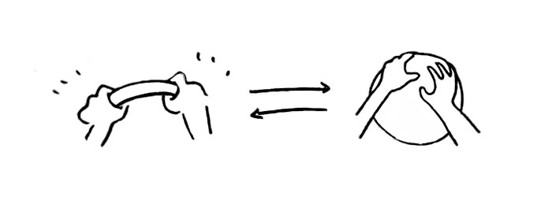
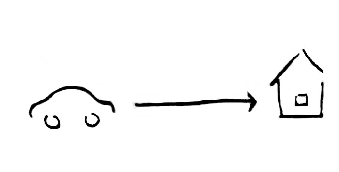

Omnipresence amplifies personal presence of a driver, creating ambient and haptic representation of his presence and closing distance - through haptic Orb - in environments and lives of people they matter to. Omnipresence creates active sense driver’s presence, unique experience of coming home, and being expected.

Cars have the opportunity to forge unique forms of collaboration between people and technology to help them gain access to a more imaginative and hyper sensorial interpretation of our world.
Communication across space and time is a form of mobility. Car is a form of analogue communication with the future. Omnipresence gives us the ability to make an emotive connection with the future, sending and receiving touch signals, amplifying a distant presence of the driver.